NOTE: This page describes a proposed persistence model for a future Jackrabbit core. This is not how Jackrabbit currently works.
This document describes a radically new persistence model, "Next Generation Persistence", that is designed to solve some of the architectural issues that the current Jackrabbit persistence model introduces (for example the need for synchronization and locking in many places). The proposed model would also offer many nice features that are difficult or even impossible to achieve with the current architecture.
There are a number of open questions related to this model, especially how to make it perform well and to avoid excessive resource usage, but it is believed that these issues can be solved. The purpose of presenting this model now is to gather feedback and comments, and to determine whether it makes sense to continue solving the open issues and to perhaps build some sort of a prototype start experimenting with the model in practice.
A JCR workspace is a content tree that consists of two kinds of items, nodes and properties. This content tree typically changes by time as items are added, modified, and removed. This model uses a sequence of revisions to manage these dynamic state changes. A new revision is created for each state change, and the current state of a workspace is expressed as the sequence of persisted revisions. A persisted revision is never modified.
The initial revision contains just an empty root node. The root node can never be removed, but it can of course be modified in later revisions.
Session session = ...; Node root = session.getRootNode();
In this case the JCR view of the content would be identical to the contents of the revision.
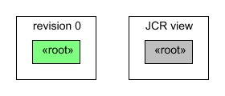Adding a node results in a revision that contains the added node and a modification to the parent node. The following code would create a revision that modifies the root node and adds a single new node called A:
Node a = root.addNode("A");
session.save();The resulting revision would look like this:
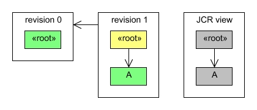A revision is linked to the previous revision to indicate where to look for content that was not modified in that revision.
Adding another node to the same parent creates a new revision:
Node b = root.addNode("B");
session.save();Now the workspace already contains three revisions:
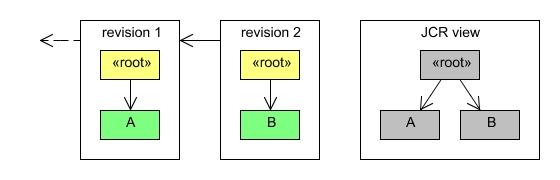More than one node can be added in a single revision:
Node c = b.addNode("C");
Node d = b.addNode("D");
session.save();In this case the revision would contain the modified parent node and the two new nodes:
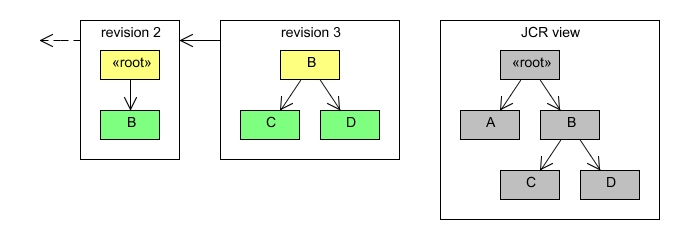Removing nodes is similar to adding them.
d.remove(); session.save();
A revision that removes a single leaf node contains the modified parent node and a removed marker for the removed node.
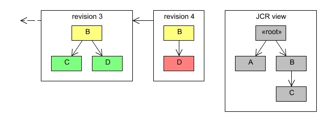The only difference in removing non-leaf nodes, is that now all the nodes in the removed subtrees are marked as removed.
b.remove(); session.save();
The resulting revision looks like this:
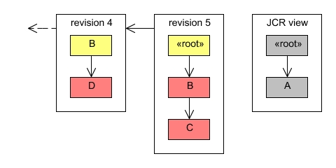Properties are handled just like leaf nodes. Property values are stored as a part of the revision where they are introduced. In fact the JCR value factory can use the revision also to store any large binaries or other created values that should not be kept in memory. This way an operation like the following only needs to make a single copy of the value:
Property property = ...; InputStream stream = ...; Value value = session.getValueFactory().createValue(stream); property.setValue(value); session.save();
A single revision can contain any number of item operations and is not restricted to just a single subtree at a time. A revision can for example remove one subtree, add another, and modify the properties in a third one. This would produce a revision that contains entries for all the modifed subtrees.
The revision model described above can be used to manage any content tree, and a straightforward application in JCR would be to manage each workspace as a sequence of revisions. This approach has benefits in explicitly enforcing separation across workspaces and making each workspace separately manageable for backups and other similar operations described below.
However, there are some cross-workspace operations like versioning and node type and namespace administration that would become much easier if the revisions model would in fact cover the entire repository and include also all the versioning, node type, namespace, and other global content and metadata. Such an approach would have a repository root node under which the global jcr:system tree would be kept and which could have the root nodes of the individual workspaces as normal subnodes.
It is not clear which scope, workspace or repository, would be better in practice.
Each JCR session is associated with two revisions, a base revision and a draft revision. The revision model is also used for transaction support.
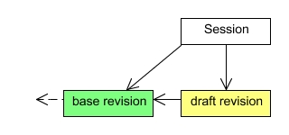The base revision of a JCR session is the latest persisted revision that was available when the session was started. The session uses this revision as the basis for providing the JCR view of the content tree. The base revision of a session can optionally be changed when more recent revisions are persisted during the session lifetime. These base revision updates can happen automatically if the session always wants to see the latest content, or the base revision can remain constant until the session is explicitly refreshed.
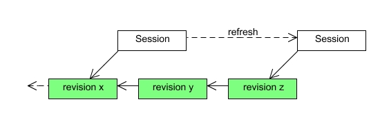The explicit refresh option is beneficial for many JCR clients as they do not need to worry about the underlying content tree unexpectedly changing while they are accessing it.
The draft revision of a JCR session is the place where all transient changes are stored. The draft revision always uses the base revision as the previous revision against which all changes are made. If the base revision of a session is changed either automatically or because of an explicit refresh, then the draft revision is updated accordingly. Draft revisions are the only kinds of revisions that can be modified.
Persisting a draft revision consists of four steps:
The persisted revision becomes the base revision of the session and a new draft revision is created.
JCR allows a client to persist just a part of the transient space with the Node.save() method. In this case only changes to that subtree are persisted. This use case is handled by splitting the draft revision to two revisions, one with changes to that subtree and one with all the other changes. The subtree revision is then persisted as described above, and the session is updated to use the persisted revision as the base revision and the revision with the remaining changes as the draft revision. If the operation fails, then the two new revisions are discarded and no changes are made to the session.
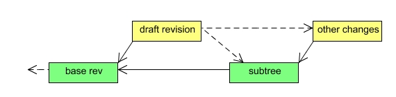Some JCR operations are defined to affect the persistent workspace storage directly without going through the transient space of the session. Such operations are handled by creating a new draft revision for just that operation and persisting it as described above. If the operation succeeds, the session is updated to use the persisted revision as the new base revision.
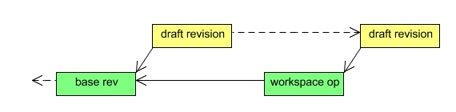The revision model offers very straightforward implementations of many advanced features. This section discusses some of the most prominent examples.
Transactions that span multiple Session.save() operations are handled with an alternative branch of persisted revisions. Instead of making a persisted revision globally available as the latest revision of the workspace, it is kept local to the transaction. When the transaction is committed, all the revisions in the transaction branch are merged into a single draft revision that is then persisted normally as described above.
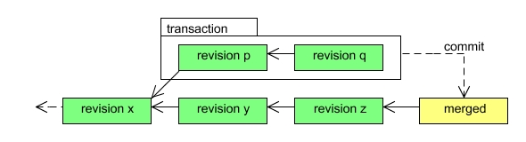If the merged revision can not be persisted (causing the commit to fail) or if the transaction is explicitly rolled back, then the revisions in the transaction branch are discarded.
This model can also easily support two-phase commits in a distributed transaction.
If the revision model was repository-scoped as discussed above, then the namespace and node type registries could be managed as normal (write-protected) content under the global jcr:system subtree as described in the JCR specification. Such a solution, while probably more complex than having the registries in custom data structures, would have many nice features.
If these global registries were managed as normal content then most of the other advanced features would cover also repository management. For example it would be possible to transactionally register or modify node types or to make the node type and namespace registries versionable! Backup and recovery operations would automatically contain also this repository metadata, and no extra code would be required for clustering support of node type or namespace changes. Even observation of the jcr:system/jcr:nodeTypes subtree would come for free.
Since the revision model by default maintains a full change history of the entire repository it is possible to heavily optimize versioning operations. For example a check-in operation can be performed by simply recording the persisted revision where the checked in node was found.
All the information needed for sending JCR observation events is permanently stored in the persisted revisions, which not only simplifies the observation implementation but also enables many advanced observation features.
One tricky issue that this model solves quite nicely is the problem on how to handle access control of item removal events. If the item in question has already been removed, then many access control implementations no longer have a way to determine whether access to that item should be granted to a given session. With the revision model it is possible to ask whether a session would have been allowed to access the item in question when it still did exist, and to filter access to the remove events based on that information.
The full change history kept by the revision model enables a new feature, persistent observation, in which a client can request all events since a given checkpoint to be replayed to the registered event listeners of a session.
The revision history can also be used as a full write-level audit trail of the content repository.
Implementing hot backups is almost trivial since persisted revisions are never modified. Thus it is possible for a backup tool to simply copy the persisted revisions even if the repository that created them is still running.
Once a full repository or workspace backup has been made, only new revision files need to be copied to keep the backed up copy up to date. If the revisions are stored as files on disk, then standard tools like rsync can be used to maintain an incremental hot backup of the repository.
The revision model allows a repository or a workspace to be "rewinded" back to a previous point in time without doing a full recovery from backups. This makes it very easy and efficient to undo operations like accidental removals of large parts of the repository.
A repository cluster can be implemented on top of the revision model by making sure that operations to persist revisions are synchronized across cluster nodes.
For example a token passing system can be used to ensure that only one cluster node can persist changes at a time. Once the node has persisted a revision it can multicast it to the other nodes and release the synchronization token. Since all change information is included in the revision the other nodes can for example easily send the appropriate observation events.
A node can easily be added to or removed from a cluster. A fresh node will bootstrap itself by streaming the entire repository contents from the other nodes.
An isolated cluster node can continue normal operation as a standalone repository. When the node is returned to the cluster it will first stream any new revisions from the other cluster nodes and request the synchronization token to merge those changes with any revisions that were persisted while the node was isolated. If the merge succeeds, the merged revisions are multicasted to the cluster and the node takes back its place within the cluster. If the merge fails, the node will release the synchronization token and remain isolated from the cluster. In such a case an administrator needs to either manually resolve the merge failure or use the point-in-time recovery feature to revert the isolated repository to a state where it can rejoin the cluster.
It is still an open question how the revisions could be organized internally to implement efficient access across histories that might consists of thousands or even millions of individual revisions.
Efficient internal data structures are a key to achieving this goal, but there are also a number of high-level optimizations that can be used on top of the revision level to achieve better performance. Many of these optimizations are independent of each other and require little or no changes in other repository operations.
Simply persisting a list of added, modified, and removed items in a revision is not likely to produce good performance as any content accesses would then potentially need to traverse all the revisions to find the item in question. Even if each revision is internally indexed so that each item can be accessed in constant time, item access can still take O(n) time where n is the number of persisted revisions. Thus a key to improving performance is finding a way to avoid having to iterate through all past revisions when locating a given node.
One potential approach could be to assign each node a sequence number based on it's location in the document order of the repository and to manage these sequence numbers as they change over revisions. Each revision would list the sequence number ranges that the changes in the revision affect. With this information it could in many cases infer whether it even is possible for a node to exist in certain revisions, and thus the implementation could skip those revisions when looking for the node.
Another alternative would be to use some sort of a backward-looking item index that indicates the revision in which a given item was last stored. Unless such an index is stored as a part of the revisions (probably not in each revision), maintaining it could introduce an unwanted synchronization block.
Since persisted revisions are never modified it is possible to heavily read-optimize and index each revision. Especially for common situations where read performance is heavily prioritized over write performance it makes sense to spend extra time preparing complex read-only indexes or other data structures when the revision is persisted. For example it might be worth the effort to use some statistical access pattern data to find the best possible ordering and indexing for a persisted revision.
The number and granularity of revisions will likely be a limiting factor in how efficiently the repository contents can be accessed. Many of the potential internal revision data structures also work better the more content there is in a revision. Thus it would be beneficial to increase the size of individual revisions.
A repository implementation can not affect how large the revisions persisted by JCR clients are, but it can transparently combine or merge any number of subsequent small revisions into one larger revision.
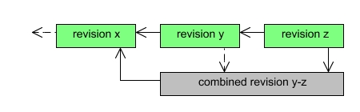The combined revision can be used instead of the smaller revisions for all operations where the exact revision of a modified item does not matter. For example when querying and traversing the repository such transparent combined revisions can speed things up considerably.
Revisions can be combined for example in a low-priority background thread. Alternatively the repository implementation can offer an administrative interface for explicitly combining selected revisions. The combine operation can also be limited to just selected subtrees to optimize access to those parts of the repository.
As an extreme case the combine operation can be performed on all revisions up to a specified checkpoint. The combined revision will then contain the full content tree up to that point in time. If the original revisions are no longer needed for things like point-in-time recovery or persistent observation, the combined revision could actually even replace all the individual revisions it contains to avoid using excessive amounts of disk space.
Since the persisted revisions are never modified, it is possible to cache their contents very aggressively. The caches can be very simple since there is no need for any cache coherency algorithms.
The read-only nature of the revisions also allows many operations to be postponed to the very last moment the relevant information is needed. For example a JCR Node instance can simply keep a reference to the on-disk storage of the last version of the node and load any related information like property values or child node references only when it is actually requested.
In a world where multiprocessor servers and multicore or soon even manycore processors are commonplace it is essential for best performance that a software system like a content repository uses every opportunity for increased concurrency.
The revision model makes it possible to avoid all blocking of read operations and requires write synchronization only when new revisions are persisted. With optimistic constraint checking and a fallback mechanism the write synchronization can even be limited to just the very last step of the operation to persist a revision. However, this and the clustering support mentioned above are not the only opportunities of concurrency that the model allows.
Repository operations like search queries, XML exports, and many consistency and constraint checks can be formulated as map-reduce operations that can concurrently operate (map) on many past revisions and combine (reduce) the partial outcomes into the final result of the operation. Such algorithms might not be worthwhile on normal repositories, but offer a way to harness the benefits of massive parallelism in huge content repositories that may reside in grid environments.